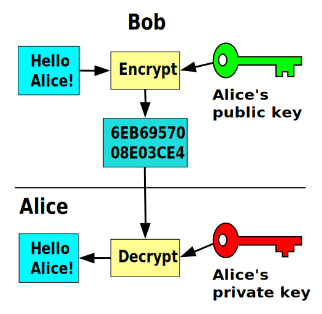

<!doctype html>
<html lang="en">
    <head>
        <title>PGP Keysigning Party</title>

        <meta charset="utf-8">
        <meta name="description" content="PGP Keysigning Party">
        <meta name="author" content="Vincent Wong">
        <meta name="apple-mobile-web-app-capable" content="yes" />
        <meta name="apple-mobile-web-app-status-bar-style" content="black-translucent" />
        <meta name="viewport" content="width=device-width, initial-scale=1.0, maximum-scale=1.0, user-scalable=no, minimal-ui">

        <link rel="stylesheet" href="css/reveal.css">
        <link rel="stylesheet" href="css/theme/whatever.css" id="theme">
        <!-- Code syntax highlighting -->
        <link rel="stylesheet" href="lib/css/zenburn.css">
    </head>

    <body>
        <div class="reveal">
            <div class="slides">
                <section data-markdown><script type="text/template">
PGP Keysigning Party
===

Hosted by

_UCLA Linux Users Group_
                </script></section>
                <section data-markdown><script type="text/template">
Motivation
---


                </script></section>
                <section data-markdown><script type="text/template">
Motivation
---

Let's be practical.

- Encrypt sensitive communication
  - Passwords, CC#, embarassing photos
  - Both ___you___ and your ___recipient's___ mailbox stores it
- Sign your messages
  - Prove that this message is sent by you
                </script></section>
                <section data-markdown><script type="text/template">
It's really easy to spoof email.
                </script></section>
                <section data-markdown><script type="text/template">
___How to deal?___

<span class="fragment">Asymmetric encryption</span>
                </script></section>
                <section data-markdown data-state="palette-green"><script type="text/template">
Asymmetric Encryption
---

1. Each person has a _public_ and a _private_ key
2. People encrypt data to you using your _public_ key
3. Only you can decrypt that data with your _private_ key
4. ???
5. __Profit__
                </script></section>
                <section data-markdown data-state="palette-green"><script type="text/template">
Asymmetric Encryption
---


                </script></section>
                <section data-markdown data-state="palette-green"><script type="text/template">
What's a key?
---

- Just a bunch of bytes (or a huge number)
- Asymmetric encryption simply means doing a lot of crazy math to
  transform between _plaintext_ and _ciphertext_
- Private-encrypted can be public-decrypted, and vice versa
  - Signatures are private->public
  - Encryption is public->private
                </script></section>
                <section data-markdown data-state="palette-brown"><script type="text/template">
So what's PGP?
---
                </script></section>
                <section data-markdown data-state="palette-brown"><script type="text/template">
Pretty Good Privacy
---

- _Relies on_ asymmetric encryption
- A public key distribution infrastructure
- Also a protocol for signing/encrypting emails
                </script></section>
                <section data-markdown data-state="palette-brown"><script type="text/template">
PGP? GPG? WTF?
---

- __GPG__ is a ___tool___ that implements __PGP__ the ___standard___
- Like a web browser vs the world wide web
- This means you interact with GPG most of the time
  - Useful generally for encrypting things, not just email
                </script></section>
                <section data-markdown data-state="palette-brown"><script type="text/template">
Key distribution
---

- You upload public key + identity to a _keyserver_
- Other people download key by searching for your name or email
                </script></section>
                <section data-markdown data-state="palette-brown"><script type="text/template">
Web of trust
---

- PGP can function without a web of trust
- But then how do you verify a keyholder is really who they say they are?
  - Manually verify key fingerprint with each other
- _Signing_ somebody's key is just leaving a permanent proof of that
- The graph of signatures and keys is the _web of trust_
                </script></section>
                <section data-markdown><script type="text/template">
Useful resources
---

<small>

* GPG Cheatsheet: <br>http://irtfweb.ifa.hawaii.edu/~lockhart/gpg/gpg-cs.html
* GPG FAQ: <br>https://www.gnupg.org/faq/gnupg-faq.html
* PGP key stats: <br>http://pgp.cs.uu.nl/mk_path.cgi
* PGP global key stats: <br>https://sks-keyservers.net/status/key_development.php
* (Windows) Gpg4win: <br>https://www.gpg4win.org/index.html
* (Macs) GPGTools: <br>https://gpgtools.tenderapp.com/kb/how-to/first-steps-where-do-i-start-where-do-i-begin-setup-gpgtools-create-a-new-key-your-first-encrypted-mail

</small>
                </script></section>
                <section data-markdown><script type="text/template">
Keysigning party
---

1. Receive a keylist from the host
2. Iterate over keylist together
   - Participant verifies their fingerprint is correct
     - first check
   - Host checks identity
     - second check
                </script></section>
                <section data-markdown><script type="text/template">
After party
---

```bash
# Import the key of everyone with two check marks
gpg --send-keys <key ID 1> <key ID 2> ... <key ID N>

# Sign their keys
gpg --sign-key <key ID 1>
gpg --sign-key <key ID 2>
...
gpg --sign-key <key ID N>

# Send signatures to keyserver
gpg --send-keys <key ID 1> <key ID 2> ... <key ID N>
```
                </script></section>
                <section data-markdown><script type="text/template">
# Thanks for coming!
                </script></section>
            </div>
        </div>
        <script src="lib/js/head.min.js"></script>
        <script src="js/reveal.js"></script>
        <script>
            Reveal.initialize({
                controls: true,
                progress: true,
                history: true,
                center: true,
                transition: 'fade',
                dependencies: [
                    { src: 'plugin/markdown/marked.js', condition: function() { return !!document.querySelector( '[data-markdown]' ); } },
                    { src: 'plugin/markdown/markdown.js', condition: function() { return !!document.querySelector( '[data-markdown]' ); } },
                    { src: 'plugin/highlight/highlight.js', async: true, callback: function() { hljs.initHighlightingOnLoad(); } },
                ]
            });
        </script>
    </body>
</html>
